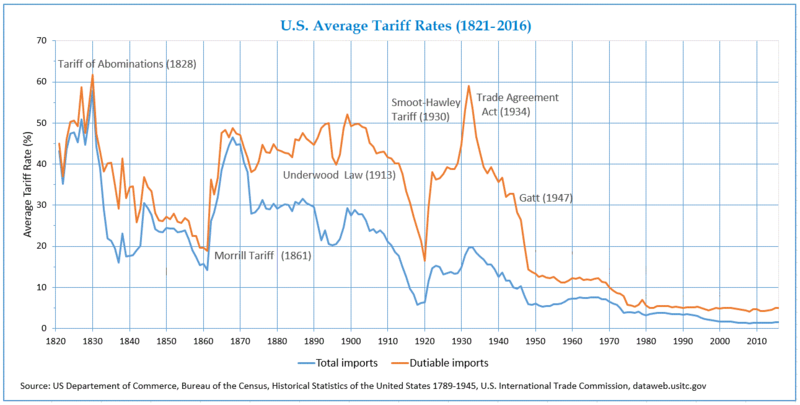

<!DOCTYPE html>
<html lang="en">
  <head>
    <meta charset="utf-8" />
    <meta name="viewport" content="width=device-width, initial-scale=1.0, maximum-scale=1.0, user-scalable=no" />

    <title></title>
    <link rel="stylesheet" href="dist/reveal.css" />
    <link rel="stylesheet" href="css/stefano.css" id="theme" />
    <link rel="stylesheet" href="plugin/highlight/zenburn.css" />
	<link rel="stylesheet" href="css/layout.css" />
	<link rel="stylesheet" href="plugin/customcontrols/style.css">

	<link rel="stylesheet" href="plugin/reveal-pointer/pointer.css" />


    <script defer src="dist/fontawesome/all.min.js"></script>

	<script type="text/javascript">
		var forgetPop = true;
		function onPopState(event) {
			if(forgetPop){
				forgetPop = false;
			} else {
				parent.postMessage(event.target.location.href, "app://obsidian.md");
			}
        }
		window.onpopstate = onPopState;
		window.onmessage = event => {
			if(event.data == "reload"){
				window.document.location.reload();
			}
			forgetPop = true;
		}

		function fitElements(){
			const itemsToFit = document.getElementsByClassName('fitText');
			for (const item in itemsToFit) {
				if (Object.hasOwnProperty.call(itemsToFit, item)) {
					var element = itemsToFit[item];
					fitElement(element,1, 1000);
					element.classList.remove('fitText');
				}
			}
		}

		function fitElement(element, start, end){

			let size = (end + start) / 2;
			element.style.fontSize = `${size}px`;

			if(Math.abs(start - end) < 1){
				while(element.scrollHeight > element.offsetHeight){
					size--;
					element.style.fontSize = `${size}px`;
				}
				return;
			}

			if(element.scrollHeight > element.offsetHeight){
				fitElement(element, start, size);
			} else {
				fitElement(element, size, end);
			}		
		}


		document.onreadystatechange = () => {
			fitElements();
			if (document.readyState === 'complete') {
				if (window.location.href.indexOf("?export") != -1){
					parent.postMessage(event.target.location.href, "app://obsidian.md");
				}
				if (window.location.href.indexOf("print-pdf") != -1){
					let stateCheck = setInterval(() => {
						clearInterval(stateCheck);
						window.print();
					}, 250);
				}
			}
	};


        </script>
  </head>
  <body>
    <div class="reveal">
      <div class="slides"><section ><section data-markdown><script type="text/template"><!-- .slide: class="drop" -->
<div class="" style="position: absolute; left: 0px; top: 0px; height: 700px; width: 960px; min-height: 700px; display: flex; flex-direction: column; align-items: center; justify-content: center" absolute="true">

# Comparative Political Economy of Trade

Stefano Pagliari

IP2031
</div></script></section><section data-markdown><script type="text/template"><!-- .slide: class="drop" -->
<div class="" style="position: absolute; left: 0px; top: 0px; height: 700px; width: 960px; min-height: 700px; display: flex; flex-direction: column; align-items: center; justify-content: center" absolute="true">

## Outline
- &shy;<!-- .element: class="fragment" data-fragment-index="1" -->Trends in Global Trade
- &shy;<!-- .element: class="fragment" data-fragment-index="2" -->Trends Trade Policies
	- &shy;<!-- .element: class="fragment" data-fragment-index="3" -->Trade liberalization
	- &shy;<!-- .element: class="fragment" data-fragment-index="4" -->Trade restrictions 
- &shy;<!-- .element: class="fragment" data-fragment-index="5" -->Explaining Trade Policies
	- &shy;<!-- .element: class="fragment" data-fragment-index="6" -->Classes
	- &shy;<!-- .element: class="fragment" data-fragment-index="7" -->Sectors
	- &shy;<!-- .element: class="fragment" data-fragment-index="8" -->Firms
	- &shy;<!-- .element: class="fragment" data-fragment-index="9" -->Workers
	- &shy;<!-- .element: class="fragment" data-fragment-index="10" -->Institutions
	- &shy;<!-- .element: class="fragment" data-fragment-index="11" -->Ideas
</div></script></section><section data-markdown><script type="text/template"><!-- .slide: class="drop" -->
<div class="" style="position: absolute; left: 0px; top: 0px; height: 700px; width: 960px; min-height: 700px; display: flex; flex-direction: column; align-items: center; justify-content: center" absolute="true">

## Global Trade
</div></script></section><section data-markdown><script type="text/template"><!-- .slide: class="drop" -->
<div class="" style="position: absolute; left: 0px; top: 0px; height: 700px; width: 960px; min-height: 700px; display: flex; flex-direction: column; align-items: center; justify-content: center" absolute="true">

### Rise of Global Trade 
<iframe src="https://ourworldindata.org/grapher/merchandise-exports-gdp-cepii?country=~OWID_WRL" loading="lazy" style="width: 100%; height: 600px; border: 0px none;"></iframe>
</div></script></section><section data-markdown><script type="text/template"><!-- .slide: class="drop" -->
<div class="" style="position: absolute; left: 0px; top: 0px; height: 700px; width: 960px; min-height: 700px; display: flex; flex-direction: column; align-items: center; justify-content: center" absolute="true">

### Trade Openness Across Countries

<iframe src="https://ourworldindata.org/grapher/trade-as-share-of-gdp?tab=map" loading="lazy" style="width: 100%; height: 600px; border: 0px none;"></iframe>
</div></script></section></section><section ><section data-markdown><script type="text/template"><!-- .slide: class="drop" -->
<div class="" style="position: absolute; left: 0px; top: 0px; height: 700px; width: 960px; min-height: 700px; display: flex; flex-direction: column; align-items: center; justify-content: center" absolute="true">

## Trade Policies
</div></script></section><section data-markdown><script type="text/template"><!-- .slide: class="drop" -->
<div class="" style="position: absolute; left: 0px; top: 0px; height: 700px; width: 960px; min-height: 700px; display: flex; flex-direction: column; align-items: center; justify-content: center" absolute="true">

### Key Terms in Trade Policy
- &shy;<!-- .element: class="fragment" data-fragment-index="1" -->**Free Trade:** The absence of governmental intervention in the international exchange of goods and services among countries.
- &shy;<!-- .element: class="fragment" data-fragment-index="2" -->**Protectionism:** Governmental intervention to restrict or impede the exchange of goods and services among countries 
- &shy;<!-- .element: class="fragment" data-fragment-index="3" -->**Trade Liberalisation**: Removal of protectionist measures restricting or impeding the exchange of goods and services among countries
</div></script></section><section data-markdown><script type="text/template"><!-- .slide: class="drop" -->
<div class="" style="position: absolute; left: 0px; top: 0px; height: 700px; width: 960px; min-height: 700px; display: flex; flex-direction: column; align-items: center; justify-content: center" absolute="true">

### Type of Protectionist Policies
- &shy;<!-- .element: class="fragment" data-fragment-index="1" -->**Tariffs:** a tax imposed by the government on imported goods
- &shy;<!-- .element: class="fragment" data-fragment-index="2" -->**Import Quotas:** a limit on the volume of a good that may be legally imported 
- &shy;<!-- .element: class="fragment" data-fragment-index="3" -->**Administrative Barriers:** regulations, standards, testing and certification requirements introducing barriers to trade
- &shy;<!-- .element: class="fragment" data-fragment-index="4" -->**Subsidies:** financial support provided to local firms to help them compete against imports from abroad or to increase exports.
- &shy;<!-- .element: class="fragment" data-fragment-index="5" -->**Exchange rate intervention:** government intervention in the currency market to lower the value of its currency, raising the cost of exports.
- &shy;<!-- .element: class="fragment" data-fragment-index="6" -->**Preferential government spending** to favour domestic producers
</div></script></section><section data-markdown><script type="text/template"><!-- .slide: class="drop" -->
<div class="" style="position: absolute; left: 0px; top: 0px; height: 700px; width: 960px; min-height: 700px; display: flex; flex-direction: column; align-items: center; justify-content: center" absolute="true">

### Aims of Protectionist Policies
- **Protect** local industries and local jobs from **foreign competition**
- Support creation of new **"infant"** industries
- Reduces deficits in the **balance of payments**
- Counteracts **dumping** (firms selling to export markets at lower prices than are charged in domestic markets)
- Supports **national security** objectives
</div></script></section><section data-markdown><script type="text/template"><!-- .slide: class="drop" -->
<div class="" style="position: absolute; left: 0px; top: 0px; height: 700px; width: 960px; min-height: 700px; display: flex; flex-direction: column; align-items: center; justify-content: center" absolute="true">

### Average US Tariffs


<small class="caption">Source: Wikimedia Commons </small>
</div></script></section><section data-markdown><script type="text/template"><!-- .slide: class="drop" -->
<div class="" style="position: absolute; left: 0px; top: 0px; height: 700px; width: 960px; min-height: 700px; display: flex; flex-direction: column; align-items: center; justify-content: center" absolute="true">

### Trends in Global Tariffs

</div></script></section><section data-markdown><script type="text/template"><!-- .slide: class="drop" -->
<div class="" style="position: absolute; left: 0px; top: 0px; height: 700px; width: 960px; min-height: 700px; display: flex; flex-direction: column; align-items: center; justify-content: center" absolute="true">

### Tariffs Across Countries
<iframe src="https://data.worldbank.org/share/widget?indicators=TM.TAX.MRCH.WM.AR.ZS&view=map" width='700' height='466' frameBorder='0' scrolling="no" ></iframe>
</div></script></section><section data-markdown><script type="text/template"><!-- .slide: class="drop" -->
<div class="" style="position: absolute; left: 0px; top: 0px; height: 700px; width: 960px; min-height: 700px; display: flex; flex-direction: column; align-items: center; justify-content: center" absolute="true">

### Liberalising Interventions (2009-2022)


<small class="caption">Source: https://www.globaltradealert.org/global_dynamics</small>
</div></script></section><section data-markdown><script type="text/template"><!-- .slide: class="drop" -->
<div class="" style="position: absolute; left: 0px; top: 0px; height: 700px; width: 960px; min-height: 700px; display: flex; flex-direction: column; align-items: center; justify-content: center" absolute="true">

### Type of Protectionist Policies in Recent Years


<small class="caption">Source: [G20 Trade Policy Factbook November 2022](https://www.globaltradealert.org/reports/99)</small>
</div></script></section><section data-markdown><script type="text/template"><!-- .slide: class="drop" -->
<div class="" style="position: absolute; left: 0px; top: 0px; height: 700px; width: 960px; min-height: 700px; display: flex; flex-direction: column; align-items: center; justify-content: center" absolute="true">

### Protectionist Interventions (2009-2022)


<small class="caption">Source: https://www.globaltradealert.org/global_dynamics</small>
</div></script></section><section data-markdown><script type="text/template"><!-- .slide: class="drop" -->
<div class="" style="position: absolute; left: 0px; top: 0px; height: 700px; width: 960px; min-height: 700px; display: flex; flex-direction: column; align-items: center; justify-content: center" absolute="true">

### Protectionist Policies in Recent Years


<small class="caption">Source: [G20 Trade Policy Factbook November 2022](https://www.globaltradealert.org/reports/99)</small>
</div></script></section></section><section ><section data-markdown><script type="text/template"><!-- .slide: class="drop" -->
<div class="" style="position: absolute; left: 0px; top: 0px; height: 700px; width: 960px; min-height: 700px; display: flex; flex-direction: column; align-items: center; justify-content: center" absolute="true">

## Explaining Trade Policies
</div></script></section><section data-markdown><script type="text/template"><!-- .slide: class="drop" -->
<div class="" style="position: absolute; left: 0px; top: 0px; height: 700px; width: 960px; min-height: 700px; display: flex; flex-direction: column; align-items: center; justify-content: center" absolute="true">

### The Puzzle of Globalization

- &shy;<!-- .element: class="fragment" data-fragment-index="1" -->**Economic Theory**
	- &shy;<!-- .element: class="fragment" data-fragment-index="2" -->Open trade and cross-national market integration as the policy maximizing the welfare of countries and the world as a whole
- &shy;<!-- .element: class="fragment" data-fragment-index="3" -->**Evidence**
	- &shy;<!-- .element: class="fragment" data-fragment-index="4" -->Open trade has historically been the exception rather than the rule
	- &shy;<!-- .element: class="fragment" data-fragment-index="5" -->Variation in the level of support for trade within and across countries
</div></script></section><section data-markdown><script type="text/template"><!-- .slide: class="drop" -->
<div class="" style="position: absolute; left: 0px; top: 0px; height: 700px; width: 960px; min-height: 700px; display: flex; flex-direction: column; align-items: center; justify-content: center" absolute="true">

### Interest-based Explanation


</div></script></section><section data-markdown><script type="text/template"><!-- .slide: class="drop" -->
<div class="" style="position: absolute; left: 0px; top: 0px; height: 700px; width: 960px; min-height: 700px; display: flex; flex-direction: column; align-items: center; justify-content: center" absolute="true">

### Winners and Losers from Trade
- &shy;<!-- .element: class="fragment" data-fragment-index="1" -->Focus on the distributive implications of winners within the economy
	- &shy;<!-- .element: class="fragment" data-fragment-index="2" -->individuals who economically disadvantaged from open trade will pressure politicians to **increase trade barriers**
	- &shy;<!-- .element: class="fragment" data-fragment-index="3" -->individuals who gain economically from open trade will pressure politicians to **lower trade barriers**
- &shy;<!-- .element: class="fragment" data-fragment-index="4" -->Main Models and focus
	- &shy;<!-- .element: class="fragment" data-fragment-index="5" -->Heckscher-Ohlin: focus on **classes**
	- &shy;<!-- .element: class="fragment" data-fragment-index="6" -->Ricardo-Viner: focus on **sectors**
	- &shy;<!-- .element: class="fragment" data-fragment-index="7" -->New New Trade Theory: focus on **firms**
</div></script></section><section data-markdown><script type="text/template"><!-- .slide: class="drop" -->
<div class="" style="position: absolute; left: 0px; top: 0px; height: 700px; width: 960px; min-height: 700px; display: flex; flex-direction: column; align-items: center; justify-content: center" absolute="true">

## Class-based Approaches and Trade
</div></script></section><section data-markdown><script type="text/template"><!-- .slide: class="drop" -->
<div class="" style="position: absolute; left: 0px; top: 0px; height: 700px; width: 960px; min-height: 700px; display: flex; flex-direction: column; align-items: center; justify-content: center" absolute="true">

### Heckscher-Ohlin Model
- &shy;<!-- .element: class="fragment" data-fragment-index="1" -->Country will produce most efficiently the goods that use the **factor of productions** that it has in abundance:
	- &shy;<!-- .element: class="fragment" data-fragment-index="2" -->**Land**
	- &shy;<!-- .element: class="fragment" data-fragment-index="3" -->**Labor**
	- &shy;<!-- .element: class="fragment" data-fragment-index="4" -->**Capital**
- &shy;<!-- .element: class="fragment" data-fragment-index="5" -->**Stolper-Samuelson Theorem** (1941): within a country, 
	- &shy;<!-- .element: class="fragment" data-fragment-index="6" -->Owners of abundant factor will benefit from increased trade as new export markets become available. 
	- &shy;<!-- .element: class="fragment" data-fragment-index="7" -->Owners of scarce factors will tend to be hurt by increased exposure to trade
- &shy;<!-- .element: class="fragment" data-fragment-index="8" -->Trade policies shaped by **class conflict** (capital vs. labour) or urban-rural conflict (Rogowski 1989)
</div></script></section><section data-markdown><script type="text/template"><!-- .slide: class="drop" -->
<div class="" style="position: absolute; left: 0px; top: 0px; height: 700px; width: 960px; min-height: 700px; display: flex; flex-direction: column; align-items: center; justify-content: center" absolute="true">

### Industrialized Economies

</div></script></section><section data-markdown><script type="text/template"><!-- .slide: class="drop" -->
<div class="" style="position: absolute; left: 0px; top: 0px; height: 700px; width: 960px; min-height: 700px; display: flex; flex-direction: column; align-items: center; justify-content: center" absolute="true">

### Developing Economies

</div></script></section><section data-markdown><script type="text/template"><!-- .slide: class="drop" -->
<div class="" style="position: absolute; left: 0px; top: 0px; height: 700px; width: 960px; min-height: 700px; display: flex; flex-direction: column; align-items: center; justify-content: center" absolute="true">

### Income and Support for Free Trade


<small class="caption">Source: Frieden, Pettis, Rodrik, Zedillo 2012</small>
</div></script></section><section data-markdown><script type="text/template"><!-- .slide: class="drop" -->
<div class="" style="position: absolute; left: 0px; top: 0px; height: 700px; width: 960px; min-height: 700px; display: flex; flex-direction: column; align-items: center; justify-content: center" absolute="true">

### Workers and Opposition to Trade in Industrialized Economies 
- &shy;<!-- .element: class="fragment" data-fragment-index="1" -->In US and Europe, regions that have experienced job losses due to low-wage imports from abroad:
- &shy;<!-- .element: class="fragment" data-fragment-index="2" -->More likely to vote for **parties hostile to globalization** (Colantone and Stanig 2018)
- &shy;<!-- .element: class="fragment" data-fragment-index="3" -->Politicians more likely to support **protectionism** (Feigenbaum and Hall 2015)
- &shy;<!-- .element: class="fragment" data-fragment-index="4" -->More likely to vote for **Donald Trump** in 2016 (Autor et al. 2016)
</div></script></section></section><section ><section data-markdown><script type="text/template"><!-- .slide: class="drop" -->
<div class="" style="position: absolute; left: 0px; top: 0px; height: 700px; width: 960px; min-height: 700px; display: flex; flex-direction: column; align-items: center; justify-content: center" absolute="true">

## Sectoral Approaches
</div></script></section><section data-markdown><script type="text/template"><!-- .slide: class="drop" -->
<div class="" style="position: absolute; left: 0px; top: 0px; height: 700px; width: 960px; min-height: 700px; display: flex; flex-direction: column; align-items: center; justify-content: center" absolute="true">

### Ricardo-Viner Model

- &shy;<!-- .element: class="fragment" data-fragment-index="1" -->**Low factor mobility:** the real incomes of different individuals are tied very closely to the fortunes of the particular industries
	- &shy;<!-- .element: class="fragment" data-fragment-index="2" -->Workers cannot move easily from one industry to another
	- &shy;<!-- .element: class="fragment" data-fragment-index="3" -->Individual’s attitudes toward trade will reflect characteristics of the industry in which workers are located
- &shy;<!-- .element: class="fragment" data-fragment-index="4" -->**Preferences**: 
	- &shy;<!-- .element: class="fragment" data-fragment-index="5" -->Individuals who work in export-oriented sectors of the economy will support freer trade, 
	- &shy;<!-- .element: class="fragment" data-fragment-index="6" -->Individuals working in import-competing sectors will be more protectionist
</div></script></section><section data-markdown><script type="text/template"><!-- .slide: class="drop" -->
<div class="" style="position: absolute; left: 0px; top: 0px; height: 700px; width: 960px; min-height: 700px; display: flex; flex-direction: column; align-items: center; justify-content: center" absolute="true">

### Economic Sector and Preferences on Trade


</div></script></section></section><section ><section data-markdown><script type="text/template"><!-- .slide: class="drop" -->
<div class="" style="position: absolute; left: 0px; top: 0px; height: 700px; width: 960px; min-height: 700px; display: flex; flex-direction: column; align-items: center; justify-content: center" absolute="true">

## Firms and Trade Preferences
</div></script></section><section data-markdown><script type="text/template"><!-- .slide: class="drop" -->
<div class="" style="position: absolute; left: 0px; top: 0px; height: 700px; width: 960px; min-height: 700px; display: flex; flex-direction: column; align-items: center; justify-content: center" absolute="true">

### "New" New Trade Theory
- &shy;<!-- .element: class="fragment" data-fragment-index="1" -->Emphasis on firm level differences in the same industry of the same country
- &shy;<!-- .element: class="fragment" data-fragment-index="2" -->Only a small fraction of firms in export industries are productive enough to be **competitive** in the global markets (Melitz 2003).
- &shy;<!-- .element: class="fragment" data-fragment-index="3" -->Conflicting **trade preferences** among firms in the same industry
	- &shy;<!-- .element: class="fragment" data-fragment-index="4" -->**Most productive** firms in an industry and their employees are more likely to support free trade.
	- &shy;<!-- .element: class="fragment" data-fragment-index="5" -->**Less productive firms** in an industry and their employees are more likely to seek protection
</div></script></section><section data-markdown><script type="text/template"><!-- .slide: class="drop" -->
<div class="" style="position: absolute; left: 0px; top: 0px; height: 700px; width: 960px; min-height: 700px; display: flex; flex-direction: column; align-items: center; justify-content: center" absolute="true">

### Firms and Trade Preferences


</div></script></section><section data-markdown><script type="text/template"><!-- .slide: class="drop" -->
<div class="" style="position: absolute; left: 0px; top: 0px; height: 700px; width: 960px; min-height: 700px; display: flex; flex-direction: column; align-items: center; justify-content: center" absolute="true">

### Evidence on Firm's Characteristics and Trade Preferences
- &shy;<!-- .element: class="fragment" data-fragment-index="1" -->Within a sector, **exporting** firms are more likely to prefer trade liberalization than non-exporting firms (Osgood et al. 2017)
- &shy;<!-- .element: class="fragment" data-fragment-index="2" -->Kim (2017): highly productive exporting firms are more likely to lobby for trade liberalization, especially when their products are sufficiently differentiated
- &shy;<!-- .element: class="fragment" data-fragment-index="3" -->Bombardini and Trebbi (2012): when product differentiation is high, firms tend to lobby alone for product-specific protection, rather than collectively for industrywide protection
</div></script></section></section><section ><section data-markdown><script type="text/template"><!-- .slide: class="drop" -->
<div class="" style="position: absolute; left: 0px; top: 0px; height: 700px; width: 960px; min-height: 700px; display: flex; flex-direction: column; align-items: center; justify-content: center" absolute="true">

## Workers and Trade
</div></script></section><section data-markdown><script type="text/template"><!-- .slide: class="drop" -->
<div class="" style="position: absolute; left: 0px; top: 0px; height: 700px; width: 960px; min-height: 700px; display: flex; flex-direction: column; align-items: center; justify-content: center" absolute="true">

### Worker Preferences towards Trade
- &shy;<!-- .element: class="fragment" data-fragment-index="1" -->**Factor-based approaches:** workers support trade liberalization in **labour-rich** countries (developing countries) and protectionism in **capital-rich** countries (industrialized economies)
- &shy;<!-- .element: class="fragment" data-fragment-index="2" -->**Sectoral approaches**: workers support trade liberalization in **export-oriented** sectors and protectionism in **import-competing** sectors
- &shy;<!-- .element: class="fragment" data-fragment-index="3" -->**Firm-based approaches:** workers support trade liberalization in the **most productive firms** sectors and protectionism in the **least productive firms**
</div></script></section><section data-markdown><script type="text/template"><!-- .slide: class="drop" -->
<div class="" style="position: absolute; left: 0px; top: 0px; height: 700px; width: 960px; min-height: 700px; display: flex; flex-direction: column; align-items: center; justify-content: center" absolute="true">

### Labour Institutions and Trade Preferences

- &shy;<!-- .element: class="fragment" data-fragment-index="1" -->**Labour Institutions:** Support for employers conditional on **profit-sharing** institutions leading to higher wages (Dean 2016)
	- &shy;<!-- .element: class="fragment" data-fragment-index="2" -->formal recognition of labor unions,
	- &shy;<!-- .element: class="fragment" data-fragment-index="3" -->collective bargaining,
	- &shy;<!-- .element: class="fragment" data-fragment-index="4" -->explicit agreement that wages will rise along with increased profitability.
- &shy;<!-- .element: class="fragment" data-fragment-index="5" -->**Labour Repression**: Dean (2022) argues that "democratic developing countries were more likely to open their economies if they violated labor rights"
</div></script></section></section><section ><section data-markdown><script type="text/template"><!-- .slide: class="drop" -->
<div class="" style="position: absolute; left: 0px; top: 0px; height: 700px; width: 960px; min-height: 700px; display: flex; flex-direction: column; align-items: center; justify-content: center" absolute="true">

## Political Institutions and Trade Policies
</div></script></section><section data-markdown><script type="text/template"><!-- .slide: class="drop" -->
<div class="" style="position: absolute; left: 0px; top: 0px; height: 700px; width: 960px; min-height: 700px; display: flex; flex-direction: column; align-items: center; justify-content: center" absolute="true">

### Democracy and Trade Policies

- &shy;<!-- .element: class="fragment" data-fragment-index="1" -->**Democratization** and **Trade Liberalization**
	- &shy;<!-- .element: class="fragment" data-fragment-index="2" -->Milner and Kubota (2005)  find that in developing countries **regime change** toward democracy is associated with **trade liberalization**.
	- &shy;<!-- .element: class="fragment" data-fragment-index="3" -->Mechanism: democratic institutions force politicians to respond to **broader constituencies** than personalistic dictatorships.  
- &shy;<!-- .element: class="fragment" data-fragment-index="4" -->**Democracy** and **Non-Tariff Barriers**
	- &shy;<!-- .element: class="fragment" data-fragment-index="5" -->**Optimal Obfuscation**: Kono (2006) argues that democracy transparent trade tariffs but also to replace them with less transparent non-tariff barriers. 
	- &shy;<!-- .element: class="fragment" data-fragment-index="6" -->**Buy National**: Kono and Rickard (2014) find that democracy leads to lower tariffs but greater discrimination against foreigners  in public procurement.
</div></script></section><section data-markdown><script type="text/template"><!-- .slide: class="drop" -->
<div class="" style="position: absolute; left: 0px; top: 0px; height: 700px; width: 960px; min-height: 700px; display: flex; flex-direction: column; align-items: center; justify-content: center" absolute="true">

### Electoral System and Trade Policy

- &shy;<!-- .element: class="fragment" data-fragment-index="1" -->Large **electoral districts** tend to produce less protectionist policies than smaller ones (Rogowski 1987)
- &shy;<!-- .element: class="fragment" data-fragment-index="2" -->**Proportional representation** systems with large districts:
	- &shy;<!-- .element: class="fragment" data-fragment-index="3" -->politicians are elected to represent a more **diverse group of voters** 
	- &shy;<!-- .element: class="fragment" data-fragment-index="4" -->more capable of implementing broad programs in the interests of general public, such as trade liberalization
- &shy;<!-- .element: class="fragment" data-fragment-index="5" -->**Majoritarian system** with smaller districts
	- &shy;<!-- .element: class="fragment" data-fragment-index="6" -->politicians are more accountable to **local special interests**
	- &shy;<!-- .element: class="fragment" data-fragment-index="7" -->more prone to implement policies that would benefit few, such as **protectionist** measures
</div></script></section><section data-markdown><script type="text/template"><!-- .slide: class="drop" -->
<div class="" style="position: absolute; left: 0px; top: 0px; height: 700px; width: 960px; min-height: 700px; display: flex; flex-direction: column; align-items: center; justify-content: center" absolute="true">

### Access to the Policymaking and Trade Policy

- &shy;<!-- .element: class="fragment" data-fragment-index="1" -->Access points (policy-makers susceptible to lobbying) determine the price of lobbying for protection/liberalization.
	- &shy;<!-- .element: class="fragment" data-fragment-index="2" -->**Protectionists** are  better able to overcome collective action problems and organize to lobby compared to the beneficiaries of free trade
- &shy;<!-- .element: class="fragment" data-fragment-index="3" -->Ehrlich (2007) finds that higher tariffs are found in countries that have more access points to the policymaking process, such as:
	- &shy;<!-- .element: class="fragment" data-fragment-index="4" -->more parties and districts, 
	- &shy;<!-- .element: class="fragment" data-fragment-index="5" -->low level of party discipline 
	- &shy;<!-- .element: class="fragment" data-fragment-index="6" -->presidential system
- &shy;<!-- .element: class="fragment" data-fragment-index="7" -->Mansfield, Milner and Pevehouse (2007): Probability of forming a trade agreement declines as the number of **veto players** rises
</div></script></section><section data-markdown><script type="text/template"><!-- .slide: class="drop" -->
<div class="" style="position: absolute; left: 0px; top: 0px; height: 700px; width: 960px; min-height: 700px; display: flex; flex-direction: column; align-items: center; justify-content: center" absolute="true">

## Delegation and Trade Policies
- &shy;<!-- .element: class="fragment" data-fragment-index="1" -->**Delegation** of trade policies from lawmakers to the executive or an independent bureaucracy more likely to generate free trade policies  (Goldstein 1993, Lohmann and O'Halloran 1994)
- &shy;<!-- .element: class="fragment" data-fragment-index="2" -->Example: **US Trade Policymaking** in the XXth Century
	- &shy;<!-- .element: class="fragment" data-fragment-index="3" -->**XIXth & early XXth century:** exclusive control of trade by Congress and high tariffs
	- &shy;<!-- .element: class="fragment" data-fragment-index="4" -->**1930:** Smoot- Hawley tariff raised tariffs on 20,000 imported goods
	- &shy;<!-- .element: class="fragment" data-fragment-index="5" -->**1934:** Reciprocal Trade Act of 1934: Executive branch granted agenda-setting powers in trade. Congress can only approve/reject final trade agreement.
</div></script></section></section><section ><section data-markdown><script type="text/template"><!-- .slide: class="drop" -->
<div class="" style="position: absolute; left: 0px; top: 0px; height: 700px; width: 960px; min-height: 700px; display: flex; flex-direction: column; align-items: center; justify-content: center" absolute="true">

## Ideas and Trade Policies
</div></script></section><section data-markdown><script type="text/template"><!-- .slide: class="drop" -->
<div class="" style="position: absolute; left: 0px; top: 0px; height: 700px; width: 960px; min-height: 700px; display: flex; flex-direction: column; align-items: center; justify-content: center" absolute="true">

### Cultural Explanations of Trade Preferences

- &shy;<!-- .element: class="fragment" data-fragment-index="1" -->Standard trade theory assmes that individuals are atomistic and that their preferences regarding trade derive from their **economic self-interest** 
- &shy;<!-- .element: class="fragment" data-fragment-index="2" -->”Sociotropic” explanation: it is not self-interest that motivates individuals to form their preference but the **perceptions of how trade affects the country and society as a whole**
- &shy;<!-- .element: class="fragment" data-fragment-index="3" -->Citizens who have strong **nationalist** inclinations and anxieties about “**outer-groups**” (immigrants, foreign culture, etc.) are more likely to oppose free trade (Mansfield and Mutz 2009, Margalit 2012)
</div></script></section><section data-markdown><script type="text/template"><!-- .slide: class="drop" -->
<div class="" style="position: absolute; left: 0px; top: 0px; height: 700px; width: 960px; min-height: 700px; display: flex; flex-direction: column; align-items: center; justify-content: center" absolute="true">

### Economic Ideas and Trade

- &shy;<!-- .element: class="fragment" data-fragment-index="1" -->**Economic Paradigm** and Trade Policies
	- &shy;<!-- .element: class="fragment" data-fragment-index="2" -->XXIth century: David Ricardo, Comparative Advantages, and the rise of Free Trade
	- &shy;<!-- .element: class="fragment" data-fragment-index="3" -->1980/1990s: Washington Consensus and trade liberalization in developing countries
- &shy;<!-- .element: class="fragment" data-fragment-index="4" -->**Ideology** and Policymakers
	- Milner and Tingley (2011): position of trade of US legislators influenced by their ideology
</div></script></section></section></div>
    </div>

    <script src="dist/reveal.js"></script>

    <script src="plugin/markdown/markdown.js"></script>
    <script src="plugin/highlight/highlight.js"></script>
    <script src="plugin/zoom/zoom.js"></script>
    <script src="plugin/notes/notes.js"></script>
    <script src="plugin/math/math.js"></script>
	<script src="plugin/mermaid/mermaid.js"></script>
	<script src="plugin/chart/chart.min.js"></script>
	<script src="plugin/chart/plugin.js"></script>
	<script src="plugin/menu/menu.js"></script>
	<script src="plugin/customcontrols/plugin.js"></script>
	<script src="plugin/reveal-pointer/pointer.js"></script>

    <script>
      function extend() {
        var target = {};
        for (var i = 0; i < arguments.length; i++) {
          var source = arguments[i];
          for (var key in source) {
            if (source.hasOwnProperty(key)) {
              target[key] = source[key];
            }
          }
        }
        return target;
      }

	  function isLight(color) {
		let hex = color.replace('#', '');

		// convert #fff => #ffffff
		if(hex.length == 3){
			hex = `${hex[0]}${hex[0]}${hex[1]}${hex[1]}${hex[2]}${hex[2]}`;
		}

		const c_r = parseInt(hex.substr(0, 2), 16);
		const c_g = parseInt(hex.substr(2, 2), 16);
		const c_b = parseInt(hex.substr(4, 2), 16);
		const brightness = ((c_r * 299) + (c_g * 587) + (c_b * 114)) / 1000;
		return brightness > 155;
	}

	var bgColor = getComputedStyle(document.documentElement).getPropertyValue('--r-background-color').trim();
	var isLight = isLight(bgColor);

	if(isLight){
		document.body.classList.add('has-light-background');
	} else {
		document.body.classList.add('has-dark-background');
	}

      // default options to init reveal.js
      var defaultOptions = {
        controls: true,
        progress: true,
        history: true,
        center: true,
        transition: 'default', // none/fade/slide/convex/concave/zoom
        plugins: [
          RevealMarkdown,
          RevealHighlight,
          RevealZoom,
          RevealNotes,
          RevealMath.MathJax3,
		  RevealMermaid,
		  RevealChart,
		  RevealCustomControls,
		  RevealMenu,
	      RevealPointer,
        ],


    	allottedTime: 120 * 1000,

		mathjax3: {
			mathjax: 'plugin/math/mathjax/tex-mml-chtml.js',
		},
		markdown: {
		  gfm: true,
		  mangle: true,
		  pedantic: false,
		  smartLists: false,
		  smartypants: false,
		},

		mermaid: {
			theme: isLight ? 'default' : 'dark',
		},

		customcontrols: {
			controls: [
				{id: 'toggle-overview',
				title: 'Toggle overview (O)',
				icon: '<i class="fa fa-th"></i>',
				action: 'Reveal.toggleOverview();'
				},
			]
		},
		menu: {
			loadIcons: false
		}
      };

      // options from URL query string
      var queryOptions = Reveal().getQueryHash() || {};

      var options = extend(defaultOptions, {"width":960,"height":700,"margin":0.04,"controls":true,"progress":true,"slideNumber":true,"transition":"fade","transitionSpeed":"slow"}, queryOptions);
    </script>

    <script>
      Reveal.initialize(options);
    </script>
  </body>

  <!-- created with Advanced Slides -->
</html>
